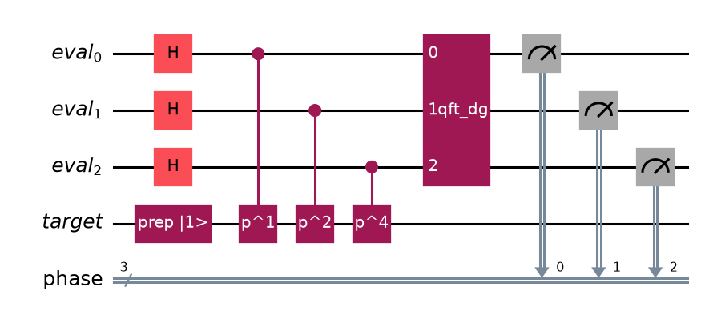
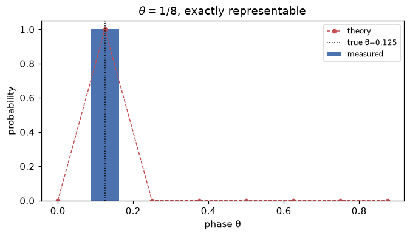
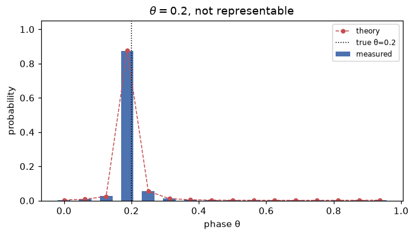
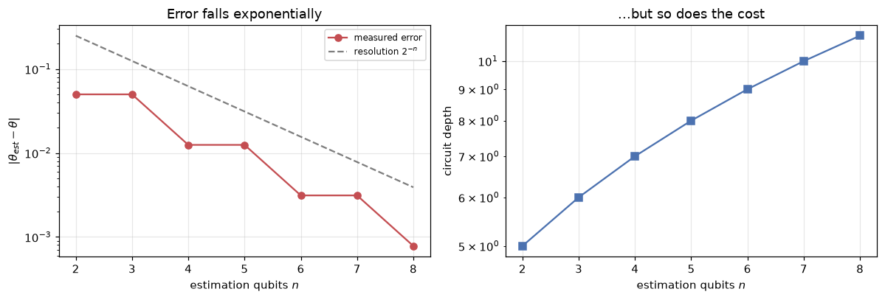
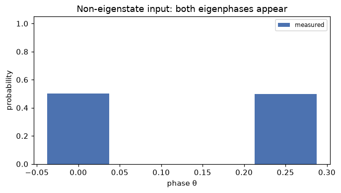

Given a unitary U and one of its eigenstates |\psi\rangle, we know that
U|\psi\rangle = e^{2\pi i \theta}|\psi\rangle
for some phase \theta \in [0, 1). Because U is unitary, the eigenvalue has modulus 1, so all the information is contained in \theta. QPE estimates \theta.
The computation of eigenvalues is critical for solving a vast array of problems where the QPE is the foundational primitive. Crucially, it resolves the diagonalization problem in polynomial time, asignificant advantage over classical algorithms, which scale as O(N^3).
QPE core components are:
phase kickback, which moves the phase from the target to the control qubits;
inverse QFT, which reads the phase from the control register.
Step 1: phase kickback
Why the phase cannot simply be measured
A global phase is unobservable. Measuring |\psi\rangle after applying U gives exactly the same statistics as measuring |\psi\rangle directly, because the factor e^{2\pi i\theta} cancels in |\langle x|\psi\rangle|^2.
The trick is to turn the phase from global into relative, by putting a control qubit in superposition. This mechanism is called phase kickback.
How phase kickback works
Take one control qubit in |+\rangle = \tfrac{1}{\sqrt2}(|0\rangle + |1\rangle) and apply a controlled-U to |\psi\rangle:
The second form deserves attention: expanding the product over all bit patterns reassembles exactly the sum, because \sum_j 2^j k_j = k.
That sum is precisely the Quantum Fourier Transform (QFT) of the basis state|2^n\theta\rangle:
\mathrm{QFT}\,|y\rangle = \frac{1}{\sqrt{2^n}}\sum_{k=0}^{2^n-1} e^{2\pi i \, yk/2^n}|k\rangle
Matching the exponents gives y = 2^n\theta. The controlled-U ladder has therefore left the register holding the Fourier transform of the answer.
Step 2: inverse QFT to extract the phase
If the register holds \mathrm{QFT}|2^n\theta\rangle, applying \mathrm{QFT}^{-1} recovers |2^n\theta\rangle, and a measurement in the computational basis reads off the integer m = 2^n\theta, that is
\boxed{\;\theta = m/2^n\;}
When 2^n\theta is an integer m, the state before the inverse QFT is exactly \mathrm{QFT}|m\rangle. The inverse QFT therefore produces |m\rangle with no amplitude on any other basis state, so the measurement returns m with probability 1.
When 2^n\theta is not an integer, the inverse QFT cannot land on a single basis state and produces instead a distribution peaked at the nearest representable values:
This expression is implemented as the function expected_phase_distribution() in the code and is overlaid on the simulated results in the following sections.
The circuit
The function qpe_circuit() assembles the three stages: the Hadamard gates, the ladder of controlled-U^{2^j} gates, and the inverse QFT. As an example, the figure below shows the circuit for the phase gate P(\varphi), whose eigenstate |1\rangle has eigenvalue e^{i\varphi}, with \varphi = 2\pi \cdot 0.25 and three estimation qubits.

QPE circuit for the phase gate with 3 estimation qubits. The target qubit is prepared in the eigenstate |1⟩.
The controlled powers are built by repeating the gate rather than by exponentiating its matrix. Both approaches are correct; repetition keeps the exponential gate count of QPE visible in the circuit, which is the honest picture of its cost, and mirrors the reference implementations.
Two examples: exact and non-representable phase
An exactly representable phase
The phase \theta = 1/8 needs 3 bits: 1/8 = 0.001_2. With n = 3 estimation qubits, 2^n\theta = 1 is an integer, so QPE must return \theta = 1/8 with certainty. Running the circuit with 8192 shots confirms it.
A non-representable phase
The PennyLane tutorial uses U = R_\phi(2\pi/5), that is \theta = 0.2, with 4 estimation qubits, and observes a peak at 0.0011_2 = 0.1875. In binary 0.2 = 0.00110011\ldots repeats forever, so the best a 4-bit register can do is 3/16 = 0.1875.
Quantity
Value
True phase
0.125
Estimated phase
0.125
Probability
1.0000
Error
0
Estimation of \theta = 1/8 with n = 3.
Quantity
Value
True phase
0.2
Most likely outcome
0.1875 = 0011_2
Probability
0.8738
Resolution 2^{-n}
0.0625
Error
0.0125
Estimation of \theta = 0.2 with n = 4.

Measured distribution for θ = 1/8.

Measured distribution for θ = 0.2. The red curve is the closed-form distribution.
In the exact case all the probability sits on a single outcome: 1/8 terminates in binary within 3 bits, so the inverse QFT maps the register onto a single basis state with no leakage.
In the non-representable case the distribution is peaked but no longer a delta: the amplitude spreads over neighbouring values, with a long, rapidly decaying tail. The red curve is the closed-form expression of , and it lies on top of the sampled histogram, confirming that the implementation reproduces the theory quantitatively rather than just qualitatively.
The second most likely outcome is 0.25 = 0.0100_2, the other neighbour of 0.2. The distribution is asymmetric because 0.2 sits closer to 0.1875 than to 0.25.
Precision: what more qubits buy
Each additional estimation qubit halves the resolution 2^{-n}, so the error falls exponentially in n. However, qubit j applies U a total of 2^j times, so the gate count grows exponentially as well, and the total cost is O(2^n) = O(1/\varepsilon) for a target error \varepsilon.
This is the central trade-off of QPE, and the reason why “just adding more qubits” is not free. The figure below shows the estimate of \theta = 0.2 for n from 2 to 8, with 4096 shots each.

Left: the estimation error follows the resolution 2⁻ⁿ. Right: the circuit depth grows as the number of estimation qubits increases.
The error tracks the resolution line closely, and the depth climbs just as fast. Buying one more bit of precision doubles the work, which is exactly why the hardware experiments keep n small.
Inputs that are not eigenstates
Nothing in the derivation required |\psi\rangle to be an eigenstate; it only required linearity. Writing an arbitrary input in the eigenbasis of U, |\phi\rangle = \sum_i c_i|u_i\rangle, QPE produces
so measuring the estimation register samples the eigenphase \theta_i with probability |c_i|^2, and collapses the target register onto the corresponding eigenstate.
This is genuinely useful: it samples the spectrum without diagonalising anything. It is also precisely the mechanism exploited by HHL, where the input |b\rangle is deliberately not an eigenvector of A.
As a check, consider again the phase gate with \theta = 0.25: |0\rangle has phase 0 and |1\rangle has phase \theta. Preparing the target in the equal superposition |+\rangle should yield both phases with equal weight, and indeed the simulation measures phase 0.000 with probability 0.5002 and phase 0.250 with probability 0.4998.

Measured phase distribution for the input |+⟩: both eigenphases appear with equal weight.
Both eigenphases appear with weight \approx 0.5, matching |c_i|^2 for an equal superposition.